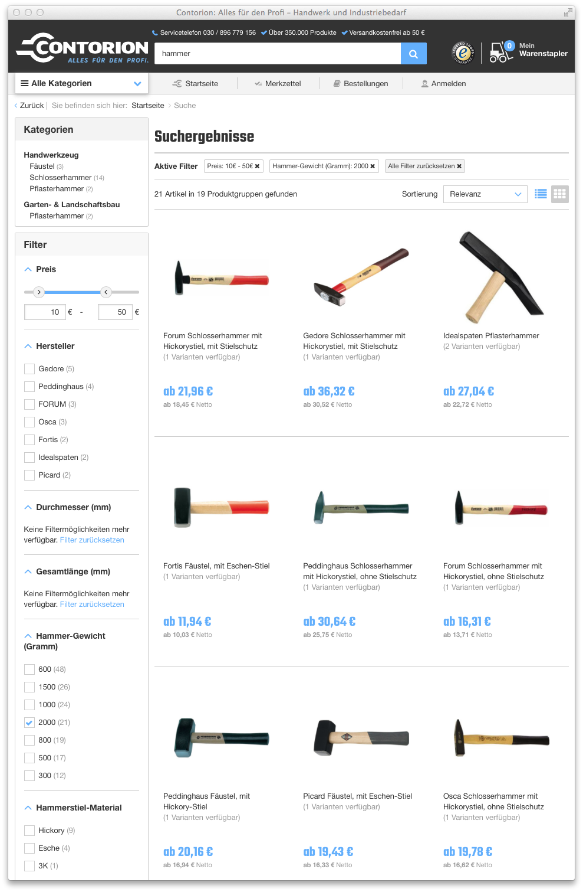

Full-Text Search
Full-text search is a feature where a user enters arbitrary text into a search field and then gets documents that are relevant for that query. It is normally combined with faceted navigation. In the example below, a user searched for “hammer” and then further filtered for hammer weights of 2000 gram and prices between 10€ and 50€:

Although some tweaking is necessary, Elasticsearch does a great job in running full-text queries fast (it’s one of the most important features of the underlying Lucene engine). On the other hand, more work is required to get text relevance right and to make sure that the first returned query results are the ones that are most relevant for the user.
Text Analysis
The defaults of Elasticsearch work fine for basic full-text search use cases, but language- and business-dependent text processing needs to be performed for a great search experience. This is called text analysis and refers to the process of splitting source text into a stream of tokens. The Elasticsearch analysis module offers a set of pre-built default analyzers but it’s also possible to build custom ones.
Analyzers are composed of a single tokenizer and zero or more token filters. A tokenizer splits source text into a stream of tokens (e.g. splitting by whitespace characters) which are then passed to token filters. Filters are applied one by one, each modifying its input stream by deleting/splitting/changing tokens and passing the stream to the next filter. The resulting list of tokens is saved to Elasticsearch inverted index and made searchable in a very performant way.
The picture below shows a text analysis process that works good for tool-related text in German:

The exact steps and their order will differ for different business models and applications (there is no “free lunch” here) so this will require some experimentation before getting it right.
Text analysis is executed both for documents that are indexed to Elasticsearch and for search terms entered by the user. Index time and search time analyzers are often very similar but not necessarily the same. The analyzer above is an example of an index time analyzer, the corresponding search time analyzer has the same tokenizer and filters except the synonym and decompounder filter.
Indexing Text
With a naive product-centric approach text analyzers would have to be added to all fields that contain text material (e.g. name, description, category-names, manufacturer, etc.). Moreover, all those attributes would need to be addressed separately in queries. This leads to unnecessarily complicated queries and, more importantly, requires additional effort when new data needs to be added to the documents. More text material per document usually means better search results and thus the process of adding new data to the index should be straightforward and simple.
We recommend putting all searchable text data for a document in one of the only two full-text document fields full-text and full-text-boosted, with more important attributes such as product names, brands and selected facets into the latter:
"full_text": "21049291 4317784792738 Fäustel DIN 6475<br><br>Stahlgeschmiedet, Kopf schwarz lackiert, Bahnen poliert, doppelt geschweifter Eschenstiel mit ozeanblau lackiertem Handende SP11968",
"full_text_boosted": "Fortis Fäustel DIN6475 2000g Eschenstiel FORTIS 2000 Fäustel Handwerkzeug Hammer Fäustel Fortis Fäustel, mit Eschen-Stiel Fortis Fäustel, mit Eschen-Stiel"
The boosting of the second field happens at query time, for example by multiplying base relevance with 7 for full_text_boosted and with 2 for full_text:
"multi_match": {
"fields": [
"search_data.full_text_boosted^7",
"search_data.full_text^2"
],
"type": "cross_fields",
"analyzer": "full_text_search_analyzer",
"query": "hammer"
}
Improving Text Relevance
Text relevance can be further improved by adding different analyzers for full-text fields. This is straightforward in Elasticsearch and requires small changes in the document mapping:
"properties": {
"full_text": {
"type": "string",
"index_analyzer": "full_text_index_analyzer",
"search_analyzer": "full_text_search_analyzer",
"fields": {
"no-decompound": {
"type": "string",
"index_analyzer": "full_text_index_analyzer_no_decompound",
"search_analyzer": "full_text_search_analyzer_no_decompound"
},
"no-stem": {
"type": "string",
"index_analyzer": "full_text_index_analyzer_no_stem",
"search_analyzer": "full_text_search_analyzer_no_stem"
}
}
}
}
full_text_index_analyzer, full_text_search_analyzer, etc. are all examples of custom analyzers and need to be configured separately from the mapping.
Elasticsearch is now going to take a textual field (in this case full_text) and analyze it with three different analyzers: once with normal full_text_search_analyzer but also with two other analyzers that are skipping the decompounding and stemming analysis steps. The reason for this is that the text loses some information during the analysis process (e.g. lowercasing the word removes the case information of the original word). By indexing the same text with different analyzers we have a chance to distinguish good matches from bad ones by giving higher scores to those search terms that match a higher number of analyzers.
Below is an example of a query that will:
first match a broad number of products using an analyzer that strips most information from the text (must part of the bool query)
score products higher that are also matching other analyzers (those that match the search term but without stemming and decompounding) (should part of the bool query)
{
"query": {
"bool": {
"must": [
{
"multi_match": {
"fields": [
"search_data.full_text_boosted^7",
"search_data.full_text^2"
],
"operator": "AND",
"type": "cross_fields",
"analyzer": "full_text_search_analyzer",
"query": "hammer"
}
}
],
"should": [
{
"multi_match": {
"fields": [
"search_data.full_text_boosted.no-stem^7",
"search_data.full_text.no-stem^2"
],
"operator": "OR",
"type": "cross_fields",
"analyzer": "full_text_search_analyzer_no_stem",
"query": "hammer"
}
},
{
"multi_match": {
"fields": [
"search_data.full_text_boosted.no-decompound^7",
"search_data.full_text.no-decompound^2"
],
"operator": "OR",
"type": "cross_fields",
"analyzer": "full_text_search_analyzer_no_decompound",
"query": "hammer"
}
}
]
}
}
}